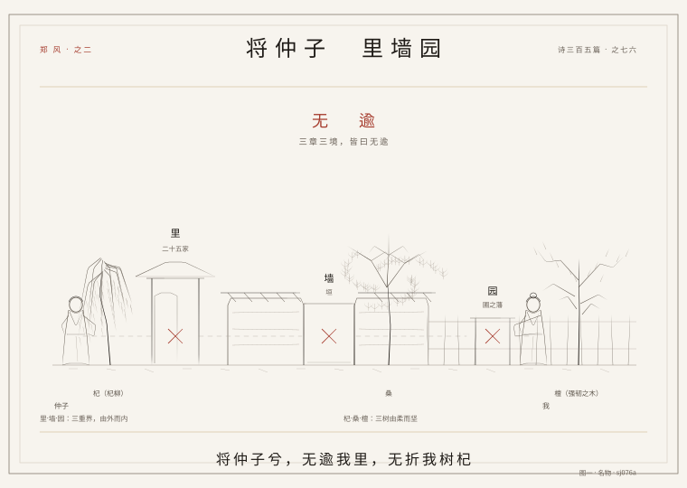
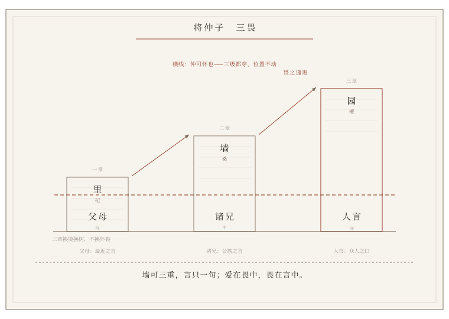

第七十六篇 将仲子
郑风 · 之二 SJ076
朗读 · 普通话
依经文原文朗读，章次不读出；配古琴底乐，不改速、不加拖腔。全库同一音色（豆包 TTS），非播音员录制。
一 解题
诗三判：
- 谁在说：诗面是一个女子。朱子说得明白：「仲子，男子之字也；我，女子自我也。」她隔着一道墙，对一个叫「仲子」的男子说话。毛诗却把「我」读成庄公，把「仲子」读成祭仲：说话的人不是女子，是郑国国君；说的不是私情，是拒谏。同一个「我」，两副喉咙。
- 说什么事：三章只说一件事——不要越过我的里、我的墙、我的园；不要折我的杞、我的桑、我的檀。不是不爱，是不敢。每一章都把「仲可怀也」再说一遍，又把「亦可畏也」再压一遍。
- 为何编在此：郑风之二。前一篇《缁衣》写如何待贤，这一篇写如何守界。一予一拒，一开一合；郑风开头两篇，已把「公共的礼」与「私人的情」并置在一起。《缁衣》教人爱人，《将仲子》教人知畏。
《毛序》：「《将仲子》，刺庄公也。不胜其母，以害其弟。弟叔失道而公弗制，祭仲谏而公弗听，小不忍以致大乱焉。」
郑笺：「庄公之母谓武姜，生庄公及弟叔段。段好勇而无礼，公不早为之所，而使骄慢。」
毛传：「将，请也。仲子，祭仲也。逾，越。里，居也。二十五家为里。杞，木名也。折，言伤害也。」
郑笺：「祭仲骤谏，庄公不能用其言，故言请，固距之。‘无逾我里’，喻言无干我亲戚也；‘无折我树杞’，喻言无伤害我兄弟也。」
朱子《诗集传》：「赋也。将，请也。仲子，男子之字也。我，女子自我也。里，二十五家所居也。杞，柳属也……盖里之地域沟树也。莆田郑氏曰：此淫奔者之辞。」
《诗本音》：「将仲子兮，无逾我里，无折我树杞。岂敢爱之，畏我父母。仲可怀也，父母之言亦可畏也。」三章章八句。
本库的看法：《将仲子》是一首把「爱」写成「畏」的诗。
它没有说「我不爱你」，它说的是「我不敢」。三章之中，「仲可怀也」一次也没有改；改的是墙、是树、是说话的人。爱没有退，退的是脚步；怕不是不爱，怕的是那三句话。
先辨六事：「将」是请、是愿，不是将军的将；「仲子」在朱子是男子的字，在毛传是祭仲，不可混；「里」是二十五家所居，不是「里面」；「杞」是杞柳，不是枸杞；「爱」是吝惜、舍不得，不是爱情；「怀」是思念、牵挂，不是怀抱。
二 经文
第一章
将仲子兮，无逾我里，无折我树杞。岂敢爱之？畏我父母。仲可怀也，父母之言亦可畏也。
第二章
将仲子兮，无逾我墙，无折我树桑。岂敢爱之？畏我诸兄。仲可怀也，诸兄之言亦可畏也。
第三章
将仲子兮，无逾我园，无折我树檀。岂敢爱之？畏人之多言。仲可怀也，人之多言亦可畏也。
分章：三章，章八句，共二十四句。
三 韵读
- 一章：里、杞（之部上声）；母（之部上声）；怀（微部平声）；畏（微部去声）。之、微通押，平上去通为一韵。
- 二章：墙、桑、兄（阳部平声）；怀、畏（微部平、去）。阳部三字自押，怀、畏遥承一章。
- 三章：园、檀、言（元部平声）；怀、畏（微部平、去）。元部三字自押，怀、畏再收。
读法：三章换的是「里—墙—园」「杞—桑—檀」「父母—诸兄—人」，不换的是「仲可怀也」「亦可畏也」。凡三章不换的句子，就是诗的轴。
轴只有两根：一根叫怀，一根叫畏。墙会换，树会换，说话的人会换；怀与畏不换。
四 字义与名物
将：请、愿。毛传「将，请也」，朱子从之。读
qiāng，不读
jiāng。不是「将军」，不是「将来」。「将仲子兮」是开口求人，语气软，不是命令。
仲子：两读。朱子说是「男子之字」——排行第二，故称仲；「子」是美称。毛传说是祭仲——郑国大夫，名足，字仲。一为情人，一为谏臣；诗的全部读法，都从这两个字分路。
里：二十五家所居。毛传「里，居也。二十五家为里」，朱子同。里必有垣，垣内有树。「无逾我里」是不要越过里垣，不是不要进到「里面」。
墙：垣。朱子「墙，垣也」。古者树墙下以桑，所以下一章说「无折我树桑」。
园：圃之藩，其内可种木。毛传「园所以树木也」，朱子「园者，圃之藩，其内可种木也」。不是今日的公园，是围起来的园圃。
杞：杞柳。毛传只说是「木名」，陆玑疏说是「杞柳属也，生水傍，树如柳，叶粗而白，色理微赤」，朱子从之。不是枸杞。
《四牡》传里的「杞，枸檵」是另一种杞，不可拿来注此篇。
桑：桑树。毛传「桑，木之众也」，朱子「古者树墙下以桑」。桑是养蚕之木，也是墙下之木；折桑，伤的是日用生计。
檀：强韧之木。毛传「檀，强韧之木」，朱子「皮青滑泽，材强韧可为车」。不是檀香。
三树由软到硬：杞柳最柔，桑为中用，檀最坚。越往内，越难折；越难折，越显出「无折」这句话的分量。
折：折断，引申为伤害。毛传「折，言伤害也」。朱子读为实折树枝；毛郑读为伤害亲戚兄弟。一字二读，一实一喻。
爱：吝惜、舍不得。郑笺「岂敢爱之而不诛与」，以「爱」为吝惜。「岂敢爱之」不是「我怎敢爱你」，是「我哪里是舍不得这些树／这些人」。
今人最易在此处错读。
怀：思念、牵挂；毛郑又训为「私怀」。郑笺「怀私曰怀，言仲子之言可私怀也」。朱子读作思念情人。两读都指向「心里放不下」，不是「抱在怀里」。
畏：畏惧、顾忌。不是「敬畏」，也不是「懦弱」。三章三畏，畏的都是「言」——父母之言、诸兄之言、人之多言。
诸兄：同族诸兄。毛传「诸兄，公族」，朱子「诸兄」。不是「许多哥哥」这么轻；「公族」二字，把家族与宗法都带进来了。
人之多言：外人的闲话、众人的口舌。朱子「人，他人也」。「多言」不是「很多人同时说话」，是「人多嘴杂，议论不休」。
无：毋，不要。三章六个「无」，都是禁止之辞。不是「没有」。
兮、也：语辞。「兮」在句末，拉长语气；「也」在句末，收住判断。「仲可怀也」的「也」，是承认；「亦可畏也」的「也」，是退让。
名物总辨：里（二十五家之垣）—墙（一家之垣）—园（圃之藩），三重由外而内；杞（柔柳）—桑（用木）—檀（坚木），三树由软而硬；父母（至亲）—诸兄（公族）—人言（众人），三畏由近而远。三样东西一起往里收，三种声音一起往外扩。
五 今译
仲子啊，求求你，别越过我家的里墙，别折断我种的杞柳。我哪里是舍不得这些树？我是怕父母开口。仲子你让我牵挂，可父母的话也让我害怕。
仲子啊，求求你，别越过我家的墙，别折断我种的桑树。我哪里是舍不得这些树？我是怕诸位兄长开口。仲子你让我牵挂，可兄长的话也让我害怕。
仲子啊，求求你，别越过我家的园门，别折断我种的檀树。我哪里是舍不得这些树？我是怕外人多嘴。仲子你让我牵挂，可外人的闲话也让我害怕。
六 章旨
一章「里」：最外一重垣，二十五家所居。杞柳最柔，一折即伤。所畏是父母——最近、最亲、最有资格开口的人。
二章「墙」：由里入家，垣更近。桑是墙下之木，日用所系。所畏是诸兄——同族公族，比父母远一层，却比父母多一层人多。
三章「园」：由家入园，已到内圃。檀最坚，最难折。所畏是人之多言——没有面目，没有姓名，却无处不在。
三章不是三次不同的约会，是同一次拒绝的三层加深。
里→墙→园，是脚步往里；杞→桑→檀，是手劲加重；父母→诸兄→人言，是声音往外。越往里，越私人；越往外，越公共。这首诗的难处，正在私情与公言同时收紧。
一篇之要，在「怀」与「畏」并置。
「仲可怀也」说了三遍，是心；「亦可畏也」说了三遍，是墙。心没有改，墙也没有改；改的只是墙的名字、树的硬度、说话的人。诗人不解决这个矛盾，只让这个矛盾站着。
七 诗教
兴：此诗以「赋」为体。朱子标「赋也」，是直陈其事：女子直说，墙树直在眼前。毛郑却把里、树读成喻：里喻亲戚，树喻兄弟。一实一喻，两读并存；读法不同，诗法也就不同。
本库取朱子之「赋」为诗面，取毛郑之「喻」为诗教的一支。
观：观「言」的力量。父母之言、诸兄之言、人之多言，三层都不是刀兵，却比刀兵更早拦住脚步。礼不是先有刑罚，礼是先有声音。
一个人要越界，先听见的不是官府的禁令，是母亲的责备、兄长的劝阻、邻里的闲话。此诗把这三种声音排成三级，让人看见「礼」怎样在日常里生效。
群：郑风多情诗，此篇把情放在礼的门槛上。它不否定情，也不放纵情；它让情自己说出「畏」。能说出「畏」的情，才是知道别人也存在的情。
诗可以群，不在于大家唱同一首歌，而在于大家承认同一道墙。
怨：此诗有怨，怨而不怒。她怨的不是仲子，也不是父母；她怨的是「言」——那些她不能不听、又不能不听的话。「仲可怀也」是软软的抗议，「亦可畏也」是生生的退让。
全诗没有一句骂人，却把一个人被三面墙夹住的滋味说尽了。
诗教一句：爱而能守，是《将仲子》的诗教。
守不是不爱，是爱到不敢轻率；畏不是软弱，是知道一越界，伤的不止两个人。
八 分寸与边界
- 不可把「将」读成「将军」「将来」。将，请也，读
qiāng。这是求人，不是命令。
- 不可把「仲子」一口咬定为「第二个儿子」。仲是排行，子是美称；朱子说是男子之字，毛传说是祭仲。两读必须标明，不可混说。
- 不可把「里」解成「里面」。里是二十五家所居，里有垣；「无逾我里」是不要越过里垣。
- 不可把「杞」当成枸杞。此杞是杞柳，生水傍，枝柔可编；枸杞是另一物。
- 不可把「檀」当成檀香。此檀是强韧之木，可为车；檀香是另一物。
- 不可把「爱」解成「爱情」。「岂敢爱之」是「岂敢吝惜它」，不是「岂敢爱你」。这一字错，全诗反转。
- 不可把「怀」解成「怀抱」。怀是思念、牵挂，是心里放着，不是手里抱着。
- 不可把「畏」解成「敬畏」或「懦弱」。畏是顾忌，是知道有后果；不是崇拜，也不是胆小。
- 不可把「诸兄」只当「几个哥哥」。毛传说是「公族」，背后是宗法，不只是家内排行。
- 不可把「人之多言」只当「很多人说话」。多言是人多嘴杂、议论不休，是舆论，不是音量。
- 不可把「无」解成「没有」。六个「无」都是「毋」，是禁止。
- 不可把「岂敢爱之」解成「不敢爱仲子」。她舍不得的是树，是家，是那些会被牵连的人；对仲子，她明明说「可怀」。
- 不可把三章当成三次约会。三章是同一拒绝的三层加深：同一件事，换三重墙、三种树、三样人言。
- 不可把「逾墙」只当今日的「翻墙」。在朱读里是越礼私会，在毛读里是干犯亲戚；两读都不是技术上的翻墙。
- 不可把朱子的「淫奔」直接当成今日的道德辱骂。朱子是用礼法术语判断这首诗的来历，不是说某个具体女子「淫乱」。读古注，先读它的词义，再读它的判断。
- 不可把毛序的「刺庄公」当成唯一读法。毛读有《左传》的本事，朱读有诗面的情辞；本库两存，不强行归一。
- 不可把此诗读成简单的「反礼教」。诗中没有把父母、诸兄、人言写成恶人；它只写一个人被这些声音围住时的难。反抗礼教是后来的读法，不是这首诗自己的话。
九 存疑
- 诗旨两读：毛序主「刺庄公」，说祭仲谏而庄公不听，终致叔段之乱；朱子主「淫奔者之辞」，说女子拒仲子之约。两读各有文本依据，本库并存。这不是谁对谁错的问题，是「我」是谁的问题。
- 仲子是谁：毛传说是祭仲，朱子说是男子之字。祭仲是郑国大夫，名足，字仲；若依毛读，诗中的「仲子」不是情人，是谏臣。一字之解，整首诗从闺门转到朝堂。
- 笺引《左传》有移花接木之嫌：郑笺把「君将与之，臣请事之；君若不与，臣请除之」系于祭仲，孔疏已自承《左传》此语乃公子吕之辞，又说「仲当亦有此言」。这是汉儒以史说诗的常见做法，不可当作《左传》原文。
- 「里—墙—园」是一地三重，还是三地三进：朱子以里为二十五家所居，墙为垣，园为圃之藩，似是一地由外而内；毛郑以里喻亲戚、树喻兄弟，又似三层比喻。本库取「一地三重」为诗面，「三层比喻」为毛读。
- 「杞」的物类：毛传只称「木名」，陆玑、朱子说是杞柳；《四牡》传的「杞，枸檵」是另一种。同名异实，注家已自分辨，今人反易混。
- 「爱」的训诂：郑笺以「爱」为吝惜，朱子未明说。今人多以「爱情」读之，文义遂反。本库从笺。
- 「怀」的训诂：郑笺「怀私曰怀」，是把祭仲之言私下记着；朱子读为思念情人。两读都可通，但不可同时用在一个人身上。
- 「诸兄」的范围：毛传「公族」，朱子「诸兄」。是亲兄，还是同族诸兄？本库从毛传，取「公族」之义，因为下文「诸兄之言」与「父母之言」对举，显然不只是家内排行。
- 「父母」是否在世：毛疏说「于时其父虽亡，遗言尚存，与母连言之」，故称父母；朱子不辨。若父已亡，则「父母之言」是遗训与母训的合称，分量更重。
- 「将」的读音：毛传「请也」，朱子「请也」，皆读
qiāng。今人或读 jiāng，作「将要」解，文义不通。
- 「园」的形制：毛传「园所以树木」，朱子「圃之藩」。是菜圃，还是园囿？本库取「圃之藩」，因其与「墙」「里」同属界域，不与「园囿」的游乐义混。
- 「檀」的树种：毛传「强韧之木」，朱子「皮青滑泽，材强韧可为车」。今之檀香、青檀、黄檀，未必即此；注家只取「强韧」这一属性，不必考定树种。
- 编次之疑：郑风以《缁衣》开篇，以《溱洧》收篇；《将仲子》紧接《缁衣》，一好贤、一畏言。这是编者的安排，还是风诗原本的次序？无可确考。
十 跨典
- 《左传·隐公元年》「郑伯克段于鄢」：武姜生庄公及共叔段，爱段，请京；祭仲谏曰「都城过百雉，国之害也」，庄公曰「姜氏欲之，焉辟害」；又曰「多行不义必自毙，子姑待之」。段完聚缮甲兵，武姜将启之，庄公伐京，段奔共。这是毛序的全部本事。
读毛读，不可不读此传。
- 《左传》同一篇：「蔓草犹不可除，况君之宠弟乎？」——祭仲之谏，正是「无使滋蔓」；《将仲子》的「无折我树杞」，在毛读里就是「无伤害我兄弟」。一史一诗，用的都是「草蔓」与「树」的比喻。
- 《孟子·滕文公下》：「不待父母之命、媒妁之言，钻穴隙相窥，逾墙相从，则父母国人皆贱之。」——此语与朱读的「父母」「诸兄」「人之多言」三层，几乎一一对应。孟子说的「父母国人」，就是这首诗的三重声音。
- 《礼记·内则》：「礼，始于谨夫妇。为宫室，辨外内。男子居外，女子居内，深宫固门，阍寺守之，男不入，女不出。」——里、墙、园，正是「辨外内」的三道界线。
- 《毛诗序》：「故变风发乎情，止乎礼义。发乎情，民之性也；止乎礼义，先王之泽也。」——「仲可怀」是发乎情，「亦可畏」是止乎礼义。此篇是这十六字最好的注脚。
- 《诗经·郑风·褰裳》：「子惠思我，褰裳涉溱。子不我思，岂无他人？」——同样是郑风女子，褰裳是敢，将仲子是畏。一敢一畏，郑风的两种女子。
- 《诗经·郑风·狡童》：「彼狡童兮，不与我言兮。」——郑风屡以「言」为事；《将仲子》畏「多言」，《狡童》怨「不言」。言之为物，能拒人，也能伤人。
- 《诗经·郑风·缁衣》：前一篇美「好贤」，此一篇畏「多言」。好贤是向外待人，畏言是向内守己；一外一内，郑风之始。
- 《论语·颜渊》：「非礼勿视，非礼勿听，非礼勿言，非礼勿动。」——「无逾」是勿动，「畏言」是勿听；礼不是一条禁令，是四道门。
- 《史记·郑世家》：郑武公、庄公、祭仲、共叔段之事，可与《左传》互参；司马迁叙郑事，多本《左传》，而细节有出入。读毛序者，可取《史记》作旁证，不可当底本。
十一 双卡与图
双卡十六对：
| 将（请、愿，读 qiāng） |
将（将军、将来，误） |
| 仲子（男子之字／祭仲） |
仲子（第二个儿子，误） |
| 里（二十五家所居，里有垣） |
里（里面，误） |
| 逾（越过） |
逾（逾越规矩，混说） |
| 杞（杞柳） |
杞（枸杞，误） |
| 桑（墙下之桑，养蚕之木） |
桑（桑林游乐，误） |
| 檀（强韧之木，可为车） |
檀（檀香，误） |
| 折（折断；伤害） |
折（折中，误） |
| 爱（吝惜、舍不得） |
爱（爱情，误） |
| 怀（思念、牵挂） |
怀（怀抱，误） |
| 畏（畏惧、顾忌） |
畏（敬畏、懦弱，误） |
| 诸兄（同族公族） |
诸兄（许多哥哥，误） |
| 人之多言（众人闲话、舆论） |
人之多言（很多人说话，误） |
| 无（毋，不要） |
无（没有，误） |
| 岂敢爱之（岂敢吝惜这些树／人） |
岂敢爱之（不敢爱仲子，误） |
| 赋（直陈其事） |
赋（铺陈辞藻，误） |

图一 · 将仲子 里、墙、园三进，杞、桑、檀三树

图二 · 三畏 父母、诸兄、人言，一层高过一层
读图三处：
- 三进门：图一，里门最外，墙门居中，园门最内；一个「仲子」在门外，一个「我」在园内。三道门都画成断口，断口上各打一个「×」——不是路断了，是「无逾」三个字立在那里。
- 三棵树：杞柳枝条下垂，桑叶厚而密，檀干直而硬。三树由软到硬，正在说「越往里，越难折」；难折的不是树，是那一句话。
- 三层畏：图二，父母最低，诸兄居中，人言最高；三级台阶一层高过一层。中间一条横线贯穿三级，写「仲可怀也」——怕得越高，想得越深；这条线不动，才见这首诗的难。
断语：墙可三重，言只一句；爱在畏中，畏在言中。